warmup_prop
Phased schedule from 1+D+FS to w+FS
warmup_prop only takes effect when
w_learn, KL, and feat_select
are all True.
ICML 2026
1School of Informatics, University of Edinburgh 2Usher Institute, University of Edinburgh
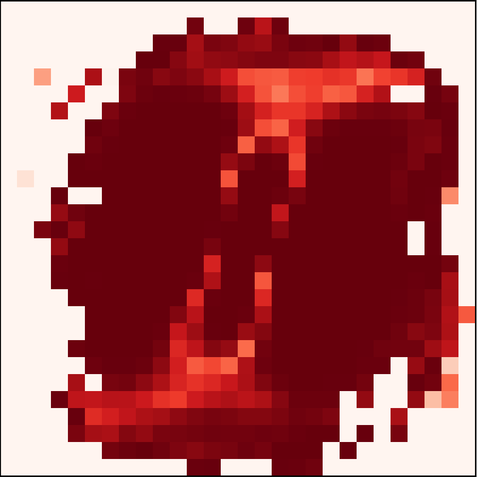
1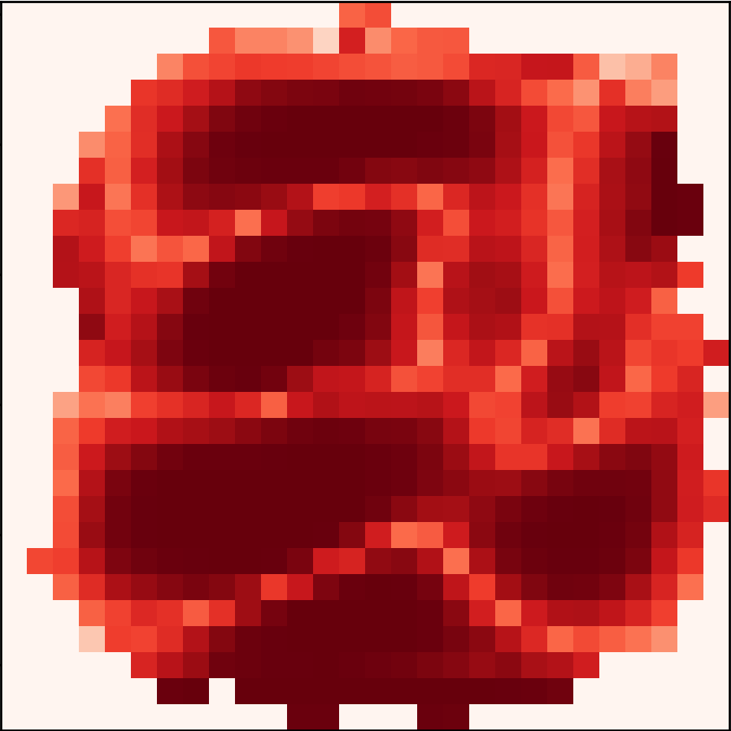
2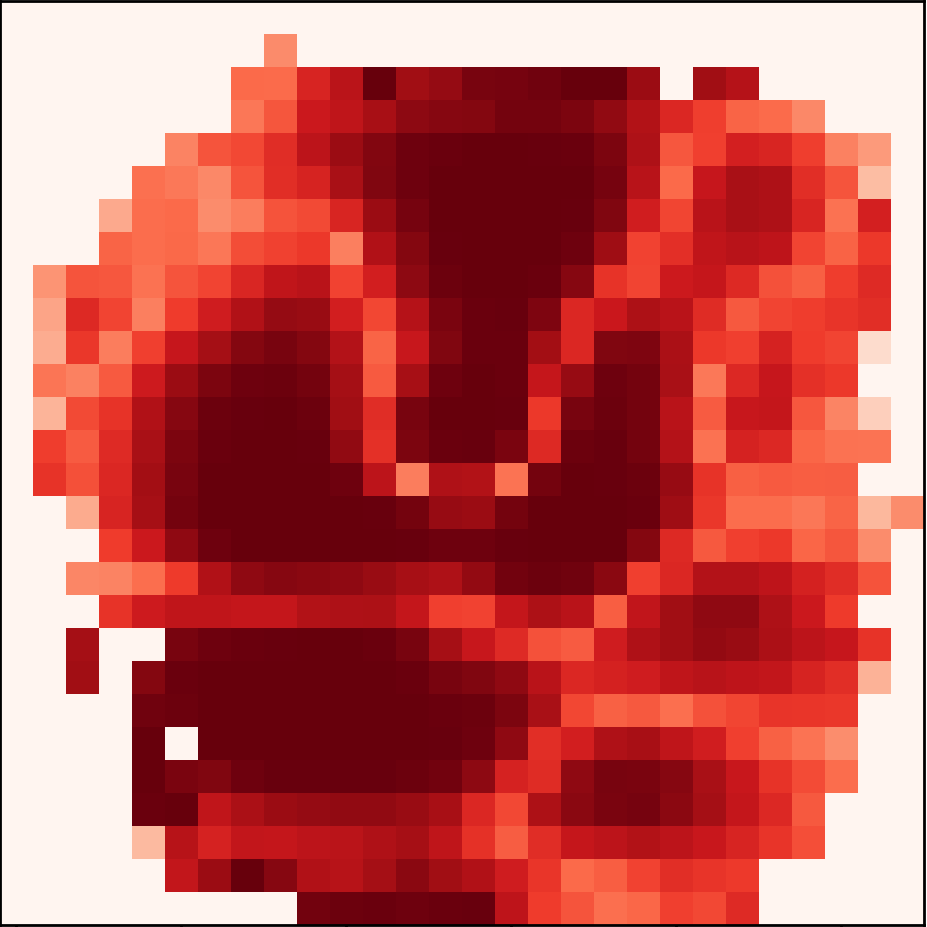
4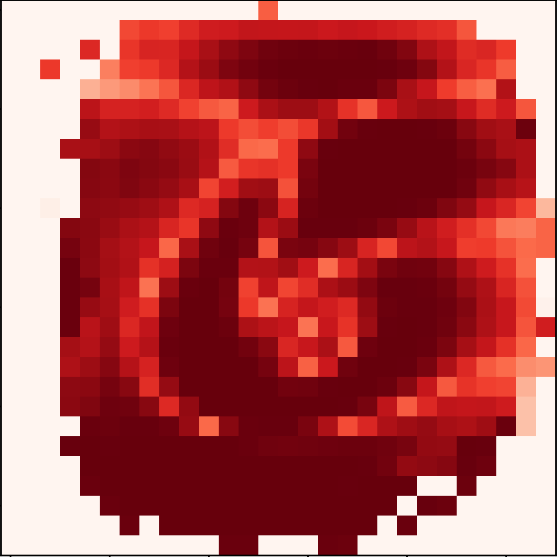
6BASIL learns clusters from data that comes with a few user-supplied pairwise constraints, scales to half a million patients, and stays accurate when up to 30% of those constraints are wrong.
Constrained clustering incorporates prior knowledge in the form of pairwise constraints to guide data partitioning. Existing Bayesian approaches struggle to scale and offer weak interpretability. We propose BASIL, a scalable Bayesian semi-supervised clustering framework that uses stochastic variational inference to jointly infer cluster assignments and feature importance weights. To handle noisy supervision, BASIL introduces an adaptive constraint-weighting mechanism that downweights unreliable constraints. Experiments on synthetic and real-world benchmarks show BASIL attains competitive accuracy while reducing training time by over 96% on large datasets, learns interpretable per-cluster feature importance maps, and remains robust to up to 30% noisy constraints under sufficient supervision. We further demonstrate applicability to large-scale health data, including medical imaging and electronic health records.
Over 96% training-time reduction on large datasets thanks to stochastic variational inference. Tested up to 500k patients.
An adaptive Gamma prior on constraint weights downweights inconsistent supervision. Holds up under 30% noisy constraints.
Per-cluster feature selection produces a relevance map per cluster, so clinicians can read off what each cluster is about.
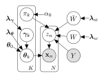
BASIL formulates HMRF-structured cluster assignments, mixture likelihoods, per-cluster feature relevance, and latent constraint reliability inside a single hierarchical generative model. Each cluster assignment $z_n$ depends on mixture weights $\pi_k$ and on the pairwise-constraint matrix $Y$ through adaptive must-link and cannot-link weights $W$ and $\bar{W}$. Per-feature relevance $\gamma_{kd} \sim \mathrm{Beta}(\lambda_{\gamma 1}, \lambda_{\gamma 2})$ shrinks each cluster mean $\boldsymbol{\theta}_k$ toward the population mean $\boldsymbol{\theta}_0$. SVI delivers joint posterior inference by maximising the ELBO,
$$\mathcal{L}(q) = \mathbb{E}_q\!\left[\log p(X, Z, \boldsymbol{\theta}, \boldsymbol{\gamma}, W, \bar{W} \mid Y)\right] - \mathbb{E}_q\!\left[\log q(Z, \boldsymbol{\theta}, \boldsymbol{\gamma}, W, \bar{W})\right],$$
under the mean-field factorisation $q(Z, \boldsymbol{\theta}, \boldsymbol{\gamma}, W, \bar{W}) = \prod_n q(z_n) \prod_k q(\boldsymbol{\theta}_k) \prod_{k,d} q(\gamma_{kd}) \prod_{(n,m)} q(w_{nm}) q(\bar{w}_{nm})$, which yields closed-form local updates compatible with mini-batching.
The three knobs the paper identifies as the ones most worth tuning. Drag the sliders to feel how each one shapes the model.
Phased schedule from 1+D+FS to w+FS
warmup_prop only takes effect when
w_learn, KL, and feat_select
are all True.
Gamma rate β on constraint weight w
Prior: w ∼ Gamma(1, wprior)
· default wprior = 1.0
w_learn=False)
1.000
Increasing wprior shifts the Gamma prior toward
zero, lowering both the adaptive prior mean and the fixed
weight to 1/wprior.
Beta rate on per-cluster feature importance γkd
Prior: γkd ∼ Beta(0.5, fsprior)
· default fsprior = 0.1
Increasing fsprior shifts the Beta prior toward
zero importance, so only features the data strongly supports
remain salient.
NMI 0.77 in 19.4 min on N=50k synthetic data at 50% supervision (vs 18.9 hr for the closest full-batch baseline, ~58x wall-clock reduction).
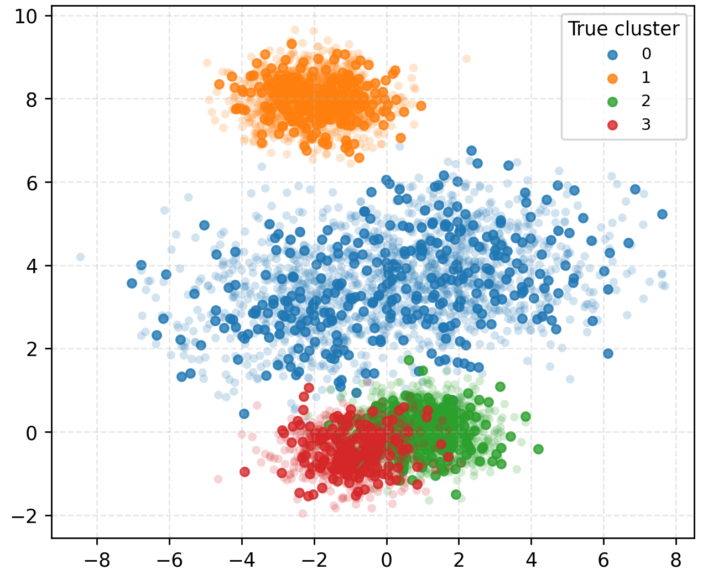
Outperforms PCK and MPCK on MNIST under 20% and 50% supervision, especially when the KL+FS configuration is used.
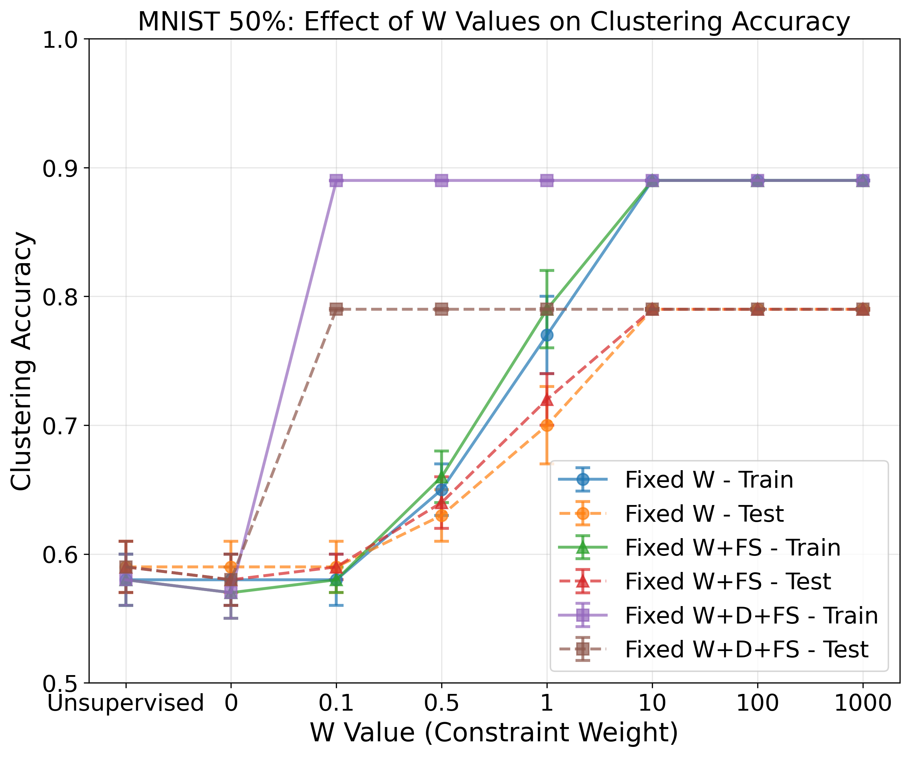
At 20% noisy constraints on Digits, the posterior mean separates clean from corrupted pairs with AUROC = 0.97.
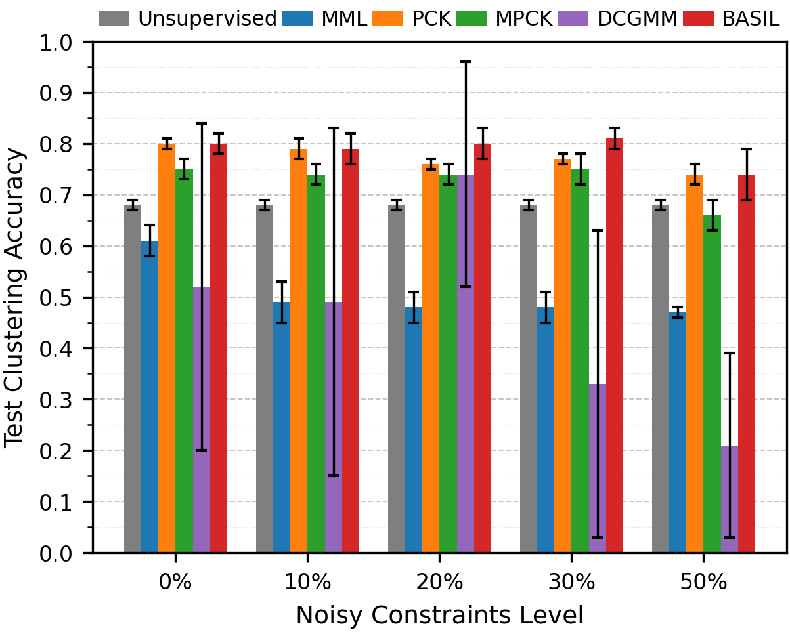
Cardiomegaly versus no cardiomegaly on 112,120 chest X-rays (binarised 28×28). Test ACC 0.68 at 50% supervision. The learned importance maps highlight the cardiac silhouette, with the cardiomegaly class showing a wider high-importance region matching how radiologists assess the cardiothoracic ratio.
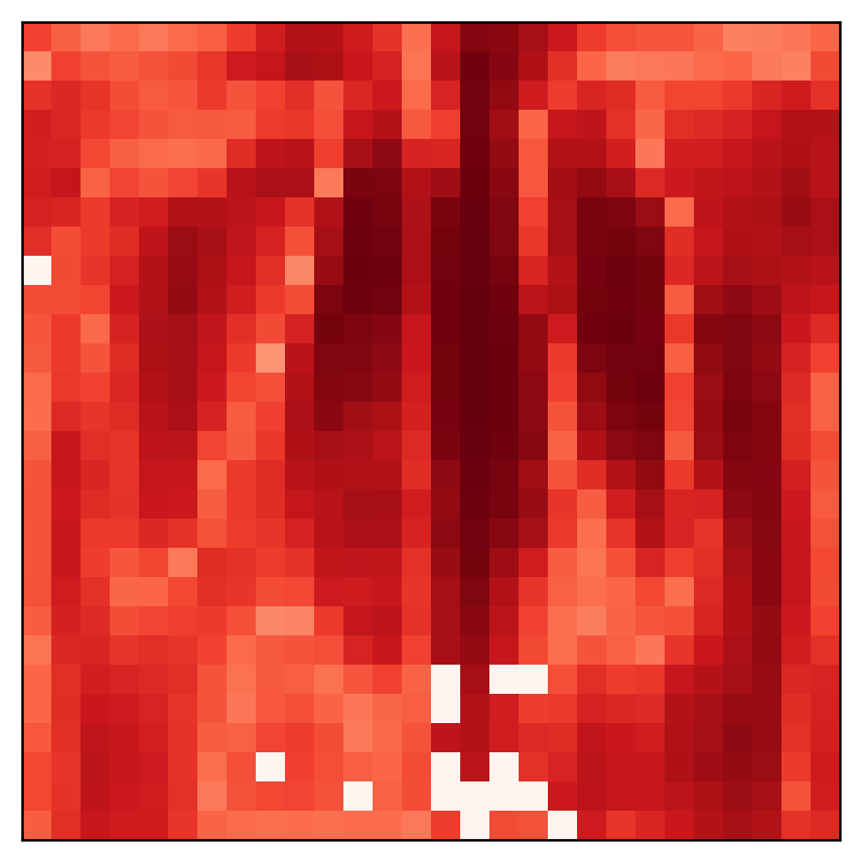
(a) no cardiomegaly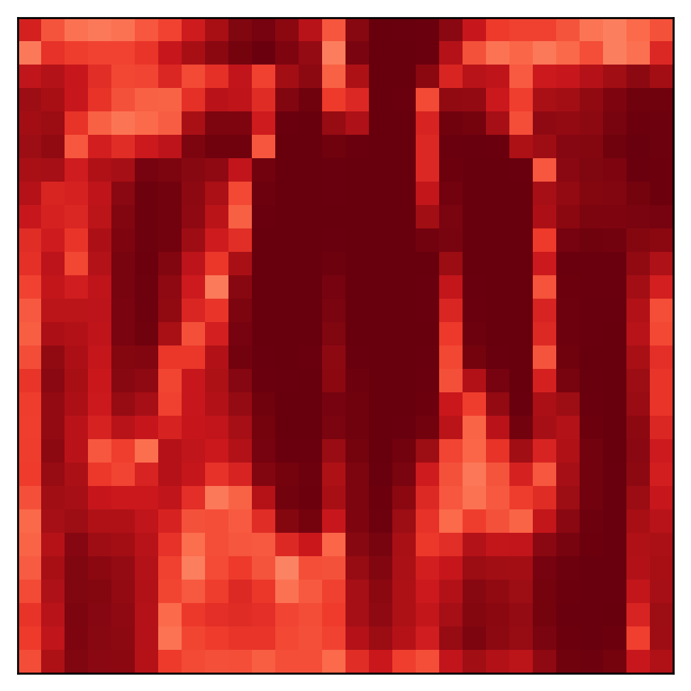
(b) cardiomegaly28 clinically meaningful patient clusters across half a million CPRD records, ages 70-74, identified under the w+FS recipe with balanced constraint sampling.
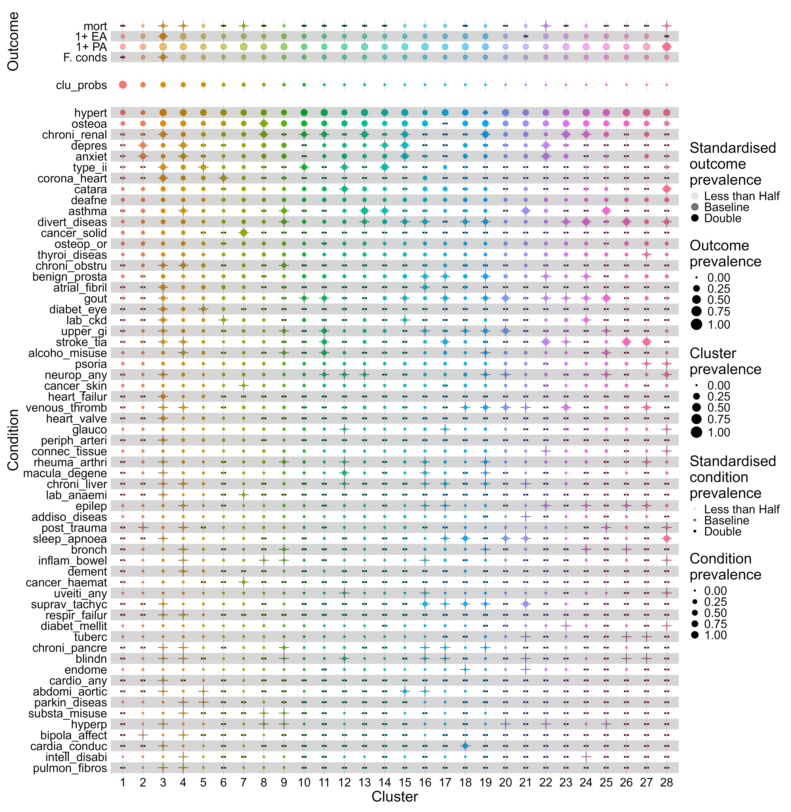
@inproceedings{wang2026basil,
title = {BASIL: Scalable Bayesian Semi-supervised Clustering with Feature Selection and Adaptive Constraint Weighting},
author = {Wang, Luwei and Panas, Dagmara and Wang, Ke and Guthrie, Bruce and Seth, Sohan},
booktitle = {Proceedings of the 43rd International Conference on Machine Learning},
year = {2026},
series = {Proceedings of Machine Learning Research},
publisher = {PMLR}
}